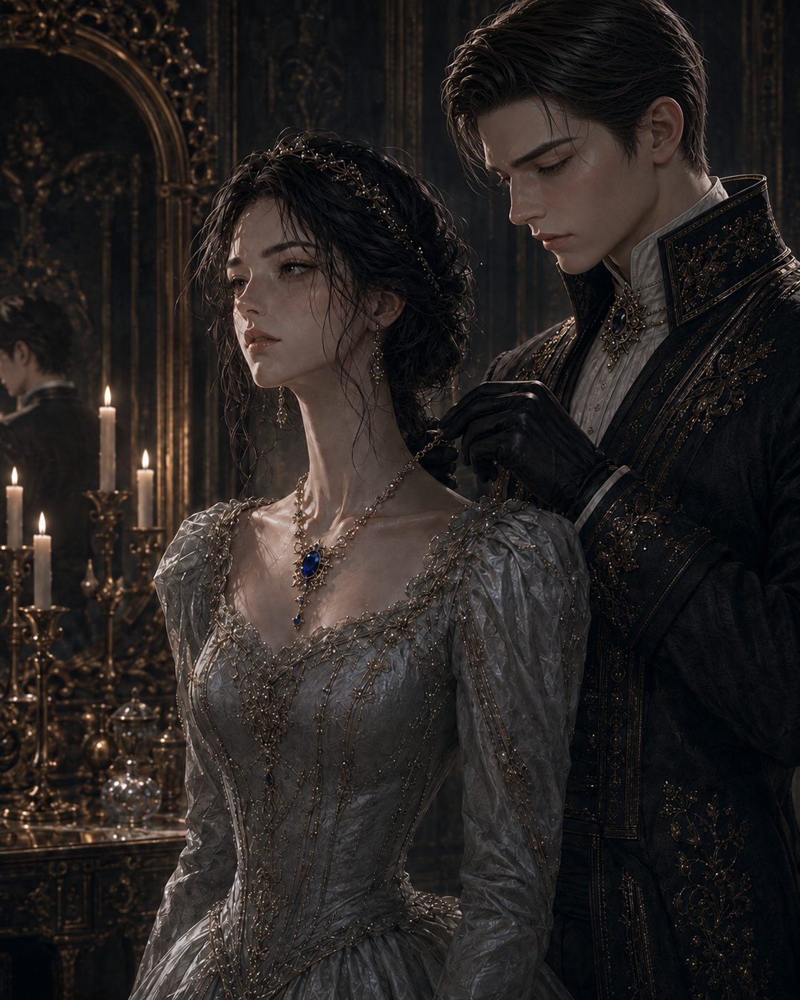

왕관이 깨지고,
거울이 그녀에게 가시관을 씌우기 일 년 전.
스물여덞 번째 이름의 날 아침.
아이리스는 자신의 입술 끝을 몇 번이고 연습하며 천천히 미소를 지었다. 광대뼈 언저리 떨림이 가라앉을 때까지 같은 표정을 유지했다.
그 얼굴은 먼지 하나 남지 않도록 매일 닦아 두어야 하는 거울처럼 하루도 저절로 유지되지 않았다.
아이리스의 방에는 같은 규칙을 따르는 거울이 여러개 걸려 있었다.
왕국의 거울은 사람을 보지 않지만, 반복된 행동과 사람들이 기억하는 얼굴을 충실히 비췄다.
그 믿음의 완벽한 얼굴을 지켜야 하는 것은 그녀의 의무가 되었다.
오늘은 이름의 날인 만큼 더욱 완벽해야 했다.
지난 일 년 동안 거울이 기억하는 얼굴과 어긋나지 않았는지 확인받는 날.
아이리스는 ‘감사합니다ʼ를 뜻하는 품위를 연습했다.
입꼬리는 부드럽게 올리되, 지나치게 환한 웃음이 되어 가벼워 보여서도, 너무 얕아 오만으로 비쳐서도 안 되었다. 정확히 그 중간의 미소였다.
그 다음에는 ‘괜찮습니다ʼ를 뜻하는 온화함의 차례였다.
입술의 힘을 살짝 풀어 부드러운 선을 만들었다. 무언가를 참아 내는 얼굴이 아니라, 상대가 안심할 수 있도록 아무 일도 없다는 듯한 얼굴이어야 했다.
세 번째 것은 연습하지 않았다.
쇄골 아래 어딘가 오래 남아 있는 감각이 있었지만, 그것이 어떤 얼굴로 비칠지 알 수 없어 조용히 덮어 두었다.
아이리스는 그대로 문을 열고 복도로 나섰다.
복도 창밖으로 마지막 잎을 떨구는 나무들이 있었고, 아침 공기에는 이미 겨울의 냄새가 섞여 있었다.
작은 식당에 도착했을 때에는 이미 그녀의 얼굴이 그녀보다 먼저 와 있어야 했다.
“좋은 아침이에요. 아버지, 어머니.”
빵 위에 버터를 바르고 있던 에드먼드 왕이 먼저 입을 였었다.
“이름의 날을 축하한다. 아이리스.”
빵 위를 스치는 왕의 칼끝에는 흐트러진 자리를 하나도 남기지 않으려는 집요함이 보였다.
“내년 이름의 날에는 계승식을 치르고 있겠지. 네 머리 위에서 눈부시게 빛날 왕관이 벌써부터 기대가 되는구나.”
“먼저, 오늘 판정 의식에서 그 눈부심을 증명해 보이렴.”
세라핀 왕비가 동부 영지의 수확 집계서에서 눈을 떼지 않은 채 덧붙였다.
“감사합니다.”
아이리스는 아침에 연습했던 미소를 지으며 예의를 지켰다.
세라핀 왕비가 고개를 들지 않은 채 말했다.
“앉으렴.”
아이리스는 창가에서 가장 가까운 의자에 앉았다. 짙은 청색 천으로 덮인 높은 등받이 의자였다.
여섯 살, 가정교사들이 처음으로 아이리스를 ‘단정함ʼ으로 기록한 날, 거울 속 아이리스의 인영이 조금 더 선명해졌고, 그 자리는 언제나 그녀를 기다리는 자리가 되었다.
아버지의 의자는 왕의 자리답게 상석에 있었고, 어머니의 의자는 왕비의 자리답게 그 오른편에 자리했다.
네번째 의자가 있었다.
한 번도 접시가 놓인 적 없는 의자였다. 누구도 그 의자에 대해 말하지 않았다.
에드먼드가 버터가 고르게 발린 빵을 정확히 반으로 자르며 말했다.
“동부에서 또 불만이 많다더군. 수확이 줄어든 해가 되면 늘 이런 식이지.”
“폐하께서 관대하시니까요.”
아이리스가 잔을 들어 올리며 말했다.
“그게 오히려 문제일지도 모르죠. 한 번의 예외가 다음에는 당연한 요구가 될 테니까요.”
늘 그랬듯 아이리스의 대답에 아버지가 웃었다.
정해진 표정만 너무 오래 보아 온 탓인지 어느 순간부터는 진짜 감정조차 잘 연습된 미소처럼 느껴졌다.
어머니는 집계서에서 눈을 떼지 않은 채 입꼬리만 아주 조금 움직였다.
아이리스는 미소를 흐트러뜨리지 않은 채 말을 이었다.
“동부에서 요구한 추가 배급량은 기존 장부와 대조해 보겠습니다. 불만을 받아들이는 일과, 그들의 요구를 모두 들어주는 일은 다르니까요.”
아이리스의 대답이 충분했다는 듯 세라핀의 멈춰 있던 집계서가 다음 장으로 넘어갔다.
“그렇게 하렴.”
에드먼드 역시 가볍게 고개를 끄덕이며 손에 쥐고 있던 나이프를 접시 위에 가지런히 내려놓았다.
“그보다 변경 사절단의 방문이 내일로 당겨졌다고 하는군요.”
세라핀이 말했다.
“나흘 뒤로 정해둔 일정을 하루 전날 바꾸다니, 베인가답군.”
에드먼드가 낮게 코웃음 쳤다.
변겅의 베인가에 대해서는 알고 있었다. 왕국의 북쪽 경계를 지키는 오래된 가문. 이름도, 사람을 기록하는 방식도, 중앙과는 달랐다.
“이번엔 코멕 대공의 병세로 후계자가 오는 모양이더군. 이름이 뭐였지?”
어머니가 집계서 옆에 놓인 작은 종이를 가리켰다.
‘홀리스 베인.ʼ
아이리스는 그 이름을 속으로 한 번 되뇌었다. 내일 그를 잘못 부르지 않기 위해서였다.
입술 끝에 잠시 머물다 흩어진 그 이름은, 유독 쉽게 잊히지 않았다.
***
아침 식사 뒤, 아이리스는 모든 편지에 직접 답하기 위해 책상에 앉았다.
답장을 시종에게 맡기는 것은 왕족에게 허락된 일이었지만, 자신의 이름을 기억하고 직접 답해 주는 공주는 사람들에게 더 다정한 모습으로 기억되었다.
그렇게 쌓인 기억들은 거울 속 아이리스의 얼굴을 더욱 완벽하게 빚어냈다.
그녀는 도착한 마흔두 통의 편지 모두에 첫 번째와 같은 온기를 담아 답했다.
수확량이 줄어든 농부에게는 왕국이 잊지 않고 있다는 확신을 주었고, 딸의 궁정 진출을 바라는 하급 귀족에게는 무엇도 약속하지 않았지만 가능성만은 남겨두었다.
마흔 번째 편지를 접었을 땐 손목이 저렸다.
그녀는 잠시 멈추고 편지 두 통을 옆으로 밀어냈다.
“전하, 오늘은 여기까지만 하시겠습니까?.”
시녀 브리나가 조심스럽게 물었다.
아이리스는 맞은편 거울을 보았다. 거울에는 성실하고 온화한 공주의 모습이 비췄다.
“마저 끝내도록 할게.”
남은 두 통 중 마지막 편지 아래, 중앙의 서류와 함께 북부에서 보내온 장부의 사본 한 장이 놓여 있었다.
한 아이의 이름 아래 어머니와 이모의 이름이 나란히 보였다. 어머니는 지난겨울 눈보라에 실종되어 생사가 확인되지 않았고, 이모가 아이를 거두어 기르고 있다는 짧은 설명이었다.
중앙에서 북부의 기록을 옮겨 적어야 할 양식에는 보호자의 이름을 넣는 칸이 하나뿐이었다.
그 아래, 중앙 서기관의 정갈한 필체로 짧은 메모가 붙어있었다.
‘어느 쪽을 남길지 확인해 주십시오.ʼ
살아 있을지도 모를 어머니와 그동안 아이를 거둔 이모.
어느 한 사람의 이름만 남길 수는 없었다.
아이리스는 두 이름을 그대로 두고 여백에 작은 글씨로 적었다.
‘미확인. 다시 살필 때까지 아이의 배급은 그대로 둘 것.ʼ
서류를 덮으려던 아이리스의 시선이 사본 끝자락에 멈췄다. 투박한 베인가의 문장이 찍혀 있었다.
그 한줄을 다 쓰고 나서야 손목을 감쌌다.
브리나가 편지들을 하나로 묶어 정리할 때 즈음, 기록관리부 수장 펜이 찾아왔다.
그는 아이리스에게 예를 올린 뒤 준비해 온 장부를 펼쳤다.
“지난 한 달 동안 전하의 공식 인영은 대체로 안정적입니다.”
“그런가요.”
“북쪽 회랑에서 두 차례, 전하께서 너무 오래 생각에 잠겨 계셨다는 기록이 있습니다.”
“잠시 걸음을 멈추었던 기억은 있지만…….”
“그 자체는 문제가 되지 않습니다. 다만 축하 행사가 이어지는 시기이므로, 몇몇이 그것을 불만이나 우울로 해석할 수 있습니다.”
나무라는 기색은 조금도 없었다. 그저 공주의 인영을 진심으로 염려하는 목소리였다.
“조금 더 온화한 표정을 유지할게요.”
아이리스는 맞은편 거울을 향해 입가의 힘을 조금 풀어 부드러운 선을 만들었다.
펜은 만족한 얼굴로 그녀의 온화한 인영을 장부에 옮겨 적고 나서야 물러갔다.
저녁에 있을 이름의날 공식 행사를 위한 은회색 빛의 화려한 드레스가 준비되어 있었다.
아이리스가 팔을 내린 채 서 있자, 시녀들이 코르셋 뒤 쪽의 끈을 단단히 당겼다.
“조금 더 조이겠습니다.”
브리나가 말했다.
“지난 초상화보다 허리가 느슨해 보이면 절제가 흐트러진 것으로 보일 수 있습니다.”
“좀 더 숨을 참아볼게요.”
그녀는 가늘게 숨을 내쉬고 멈추기를 반복했다. 무언가를 견뎌야 할 때마다 잠시 호흡을 붙잡아 두는 것은 아이리스에게 익숙한 일이었다.
화려한 은회색 드레스가 시녀들의 손길을 거쳐 숨 막히는 아름다움으로 그녀를 감쌌다. 조금 뒤 정중하게 문을 두드리는 소리가 났다.
정혼자인 커런 노윅이었다.
그는 단정하고 격식 있는 차림이었다. 소매의 금실은 좌우가 조금도 어긋나지 않았고, 머리카락은 바람을 한 번도 맞지 않은 듯 반듯하게 정돈되어 있었다.
“이름의 날을 축하합니다. 아이리스.”
“고마워요. 커런.”
그가 다가와 벨벳 상자를 열어 보였다.
어두운 벨벳 위에서 차가운 푸른빛을 머금은 거대한 사파이어가 모습을 드러냈다.
그 주변으로 엮인 은빛 사슬에는 진주와 작은 푸른 보석들이 박혀 있었다. 목걸이는 한 치의 어긋남 혀락하지 않겠다는 듯 질식할 만큼 아름다웠다.
“노윅 가문에서 보관하고 있었습니다. 제 아버지 얼라릭 노윅께서 당신의 고모님이자 선대 공주였던 이졸데 전하를 위해 준비하셨던 예물이지요.”
커런은 벨벳 상자에서 목걸이를 꺼내 아이리스의 등 뒤로 다가가며 말했다.

아이리스의 시선이 거울 속 푸른 보석에 멈췄다.
‘이졸데 애시워스ʼ
아침 식탁에 한번도 접시가 놓인 적 없는 네 번째 의자의 주인이었다.
“그 분은 참으로 안타까운 분이셨습니다.”
“그렇죠…..”
“계승식을 며칠 앞두고 열병으로 돌아가셨지요. 오랫동안 주인을 잃었던 목걸이입니다.”
‘왕국의 왕관도, 혼인도, 자신의 이름도 완성하기 전에 세상을 떠난 비운의 공주.ʼ
왕국의 기록 속에서 이졸데의 삶은 언제나 그 한 줄로 끝났다.
잠금쇠가 목 뒤에서 ‘딸칵ʼ 하고 닫혔다.
사파이어가 아이리스의 쇄골 아래 한가운데로 묵직하게 내려앉자 커런이 목걸이에서 손을 떼며 말했다.
“오늘, 마침내 가장 완벽한 주인을 찾은 것 같아 기쁩니다.”
아이리스의 눈동자가 자신도 모르게 미세하게 떨렸지만, 품위를 지키려는 입술이 작은 미소를 되찾았다.
“조금 무겁습니까?”
“아닙니다.”
그녀의 대답에 맞은편 거울 속 아이리스의 인영이 더 선명해졌다.
“곧 익숙해질 겁니다. 중요한 것들은 대개 그 무게가 느껴지는 법이니까요.”
목걸이는 무거웠다. 사파이어의 무게 때문인지, 다른 무엇이 그녀의 숨을 누르기 시작한 것인지 알 수 없었다.
아이리스는 잠시 호흡을 가다듬었다. 아무 일도 없다는 듯, 아침에 연습했던 온화함을 얼굴 위로 가져왔다.
“가시지요. 대전의 거울들이 당신을 기다리고 있습니다.”
그녀는 커런이 내민 손을 잡고 대전으로 향했다.
서늘한 푸른빛의 사파이어가 참았던 아름다움을 드러내며 빛나고 있었다.